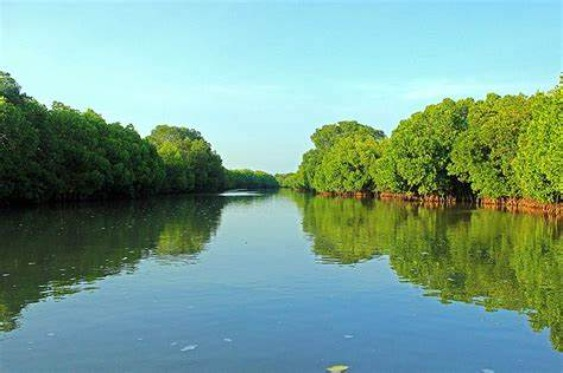
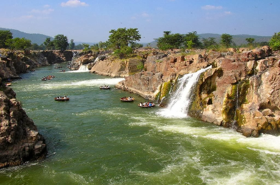
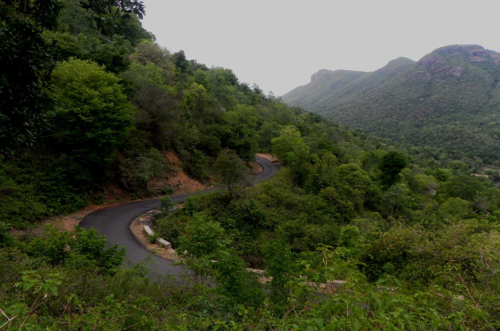

Pichavaram

Pichavaram, located near Chidambaram in Tamil Nadu, is renowned for its unique mangrove forest ecosystem and backwater channels. Visitors can explore the labyrinthine waterways by boat, marveling at the dense mangrove vegetation and diverse birdlife. The serene atmosphere and scenic beauty make Pichavaram a popular destination for nature lovers and photographers
months:The best time to visit is during the winter months from November to February when the weather is mild, and birdwatching opportunities are at their peak.The mangrove forests of Pichavaram are of immense ecological significance, serving as a vital habitat for numerous plant and animal species. The dense mangrove vegetation provides nesting grounds for birds, breeding grounds for fish and shellfish, and a sanctuary for various other wildlife, including otters, crocodiles, and snakes. The intricate root systems of the mangroves help stabilize the shoreline, prevent soil erosion, and protect coastal communities from the impact of storms and tidal surges.
Hoganekkal Falls

Hogenakkal Falls is often referred to as the "Niagara of India" because of its impressive cascade. The word "Hogenakkal" translates to "smoking rocks" in Kannada, which aptly describes the mist created by the waterfalls as it crashes onto the rocks below. The Cauvery River splits into multiple streams here, creating a series of picturesque waterfalls that attract visitors from all over. Tourists can enjoy coracle rides, which are circular boat rides operated by local fishermen, to get up close to the falls and experience its grandeur. Additionally, the area around Hogenakkal is known for its medicinal baths, as the water is believed to have therapeutic properties due to its mineral content.
months:The best time to visit Hogenakkal Falls is during the post-monsoon season, from October to march.The main attraction of Hogenakkal is its magnificent waterfall, often referred to as the "Niagara of India." The waterfall is formed by the Kaveri River as it plunges over rocky cliffs, creating a series of cascades and rapids. The roaring waters of Hogenakkal offer a mesmerizing spectacle, attracting visitors from far and wide to witness its natural beauty and raw power.
Visitors to Hogenakkal can enjoy boat rides on the Kaveri River, taking them close to the base of the waterfall for a thrilling and immersive experience. The boatmen, known as "coracle" operators, skillfully navigate the turbulent waters in traditional circular boats, providing tourists with a unique perspective of the falls and the surrounding landscape
Javadi Hills

Javadi Hills, situated in Tamil Nadu, India, is a picturesque range known for its scenic beauty, lush greenery, and tranquil atmosphere. Visitors can enjoy activities such as trekking, birdwatching, and exploring the region's rich biodiversity
months:The best time to visit Javadi Hills is during the cooler months from October to February when the weather is pleasant for outdoor activities and the landscapes are at their most vibrant.